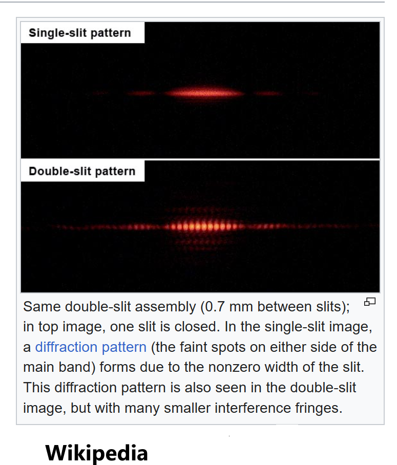
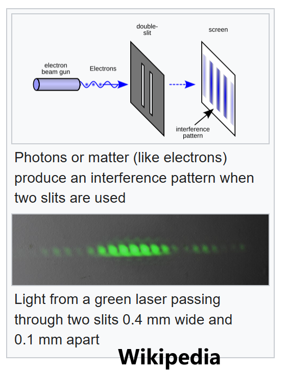

Light (“phos” φοσ) is the fundamental phenomenon of nature. Discovering properties and qualities of light is the key question underlying almost all physics, both classic and modern. The outstanding question is whether light is something like a particle or something like a wave. The particle/corpuscle/photon model originates with Newton’s investigations into Opticks (Newton 1704), while the wave/undulatory model was proposed by Young and Huygens and supported by Young’s classic double-slit experiment (Young 1801). In classical physics, the diverse “particle” and “wave” models of light was cause of significant tension. Eventually the modern physics formalized this tension in Bohr’s philosophy of “complementarity”, c.f. the Copenhagen interpretation of quantum physics. We have critiqued Bohr’s complementary in our paper on the foundations of special relativity. Indeed we argue that Einstein’s SR is based on the erroneous hypothesis that “light travels in vacuum” at a speed which is independant of every inertial frame. This property simultaneously contradicts both the particle and wave models of light.
In this article we discuss a third classical alternative to the particle-wave models of light. This third alternative originates in the work of Ralph N Sansbury (Sansbury 2012). Light, as we argue following Sansbury, has a different explanation. Sansbury proposes that “light is not something that travels at all, but is rather the effect of cumulative oscillations of charge in atomic nuclei.” In this explanation, the speed of light is understood as a time delay, namely the time required for subatomic oscillations to accumulate sufficient energy and excite orbital electrons which become detectable as light in target receivers.
Sansbury’s original approach involved Coulomb interaction as the force law between electric charges in motion. However, our approach introduces Wilhelm Edouard’s Weber’s electrodynamic force law. Thus we modify Sansbury’s model by introducing the Weber potential (which is electrodynamic) in place of Coulomb’s potential (which is electrostatic). Our dependance on Weber’s potential implies an action-at-a-distance force law. Sansbury’s explanation is based on cumulative effects of instantaneous electrodynamic action-at-a-distance. Sansbury assumes “that light or radio signals are the result of instantaneous forces at the same repeated frequency acting on atomic nuclei in the eye or in a radio antenna, [which] after a delay, increase in amplitude to produce a detectable effect [in the receiver].”
We explain Sansbury’s idea with a simple analogy. Suppose you have a friend visiting you from Toronto to Ottawa. To receive your Toronto friend at your home (in Ottawa), the door of your house only needs to be open during the expected time of arrival. The door can be closed during the expected travel time of your friend, and this will not interfere with their arrival at your house. Your travelling friend only needs the door open and unobstructed at the expected time of arrival. However light, argues Sansbury, is not something that travels, but is rather the cumulative effect of subatomic oscillations via action at a distance. For Sansbury, light is the effect of cumulative forces, and to receive light it’s more important the door be open during the travel time so these forces can be accumulate. The door can even be closed during the expected time of arrival, and the light signal will be received! In Sansbury’s model light does not travel, but attenuates. Light signals do not have a speed, but rather subatomic nuclei have a time delay before accumulating enough energy to be distinguishable from background noise.
The burden of Sansbury’s idea and the third alternative that light does not travel, is to provide explanations of all the keystone physics experiment involving light. Such keystone experiments include:
- Newton
- Roemer, Bradley’s Stellar Abberation
- Fizeau (1849)
- Foucault
- Young’s Double Slit Experiment (1801)
- Michelson Rotating Mirror (1879)
- Michelson-Morley Interferometer (1887)
- Photoelectric Effect (1905)
- Compton Scattering (1923)
- etc…
Young’s Double Slit Experiment
Historically Young’s demonstration of dark and bright fringes in the double slit experiment provided key evidence for Huygens-Fresnel’s wave theory of light contra Newton’s corpuscular “photon” theory.
Here is a possible way to motive the surprising results of Young’s double slit experiment. Suppose we start with a single slit. In both particle and wave models of light, we expect the resultant image on the receiver screen to be something like a pulse or bump

. In otherwords, for a single slit, the image is a distorted “spotlight” depending on the relative positions of the light source and the slit. Roughly speaking the receiver screen has a clear bright spot which diminishes outwardly. An object centred around the clear bright spot will be the clearest image produced by the light source. This settles the single slit case.Now what happens if we have two slits? The surprising result of the double slit experiment is that the resultant image is not the obvious vector sum of the single slit images. In otherwords, if one had two distinct images on the receiver screen, there’s no obvious configuration of slits which clearly images both images. The seemingly “obvious” double slit experiment does not simultaneously image the two objects, but rather there are alternating fringes of bright/dark spots.
This is the surprising result of Young’s experiment.

Sansbury’s Explanation of Interference Effects
Sansbury briefly accounts for the observed interference fringes in his book (Sansbury 2012) as follows: “The different delays from secondary oscillations in charges in the edges of the slits to the dark bands […] produce out-of-phase delays, and, to the bands of light, in-phase delays.”
“The probability that a photon would go from the light source to a light band instead of a dark band, on an opaque screen at the further side of an intermediate opaque screen with slits, was demonstrated by the resulting bands themselves. It could no longer be ascribed to the in-phase or out-of-phase arrival of the discredited waves of Maxwell.”
The key idea is oscillation of charge in the edges.
Recall that a coherent light source is an oscillatory electrical system. The light source is not interacting exclusively with the receiver, because the environment also has the intermediate screen with double slits. Sansbury is emphasizing the secondary oscillations in these edge charges. We claim that these secondary charges, due to the dimensions of the double slit experiment, dominate the receiver effects, and thus in-phase and out-of-phase vector addition causes the observed interference fringes.
Weber’s action-at-a-distance potential implies a central radial force. Therefore interactions \(F_{sr}\) between source and receiver are also mediated by the interactions \(F_{sA}+F_{Ar}\). The total force of the system is therefore represented by \(F_{sr}+F_{sA}+F_{Ar}\) where \(A\) is the double slit barrier.
(Comment: We need a lemma that intermediate forces dominate over larger scale, i.e. the force at radius R/2 is much stronger than the force at radius R. Therefore the edge interactions \(F_{Ar}\) dominate the receiver, and are much greater than \(F_{sr}\) between the source and receiver.)
(Comment: So what is the induced effect in the edge electrons? Naively we believe edges involve exposed electrons, i.e. the lattice structure between the positive nuclei is exposed and orbital electrons are exposes. This would imply that edges are generally negatively charged. But is this true?)
Step 1. The source induces oscillations in the edge electrons.
Step 2. The differences in phases between these secondary edge oscillations causes the interference fringes.
Remark. The double slit experiment requires coherent light sources. This implies that the relative phase differences are constant. This is important for the interpretations of the “interference” effect of waves and interference in the Sansbury cumulative action-at-a-distance model. Coherence means that the usual explanation of Huygen’s type “wave cancellation” at the receiver can also be interpreted as “vector cancellation” of the effects of oscillating electric charges at the separate slits on the receiver screen.
Conclusion
This is a brief introduction to Ralph Sansbury’s third alternative to the particle-wave duality problem of light, namely that light is not something that travels at all.
To be continued
[-JHM]